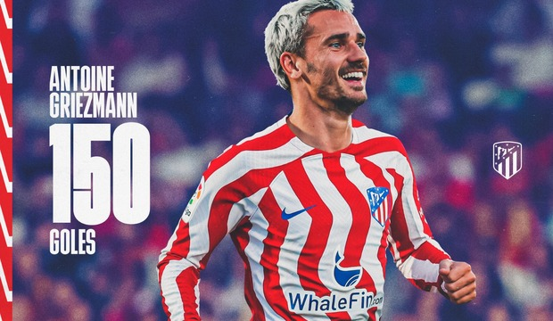
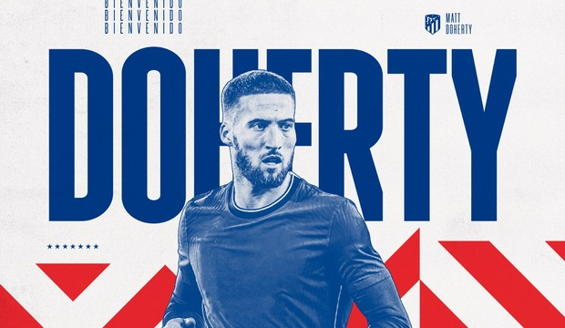
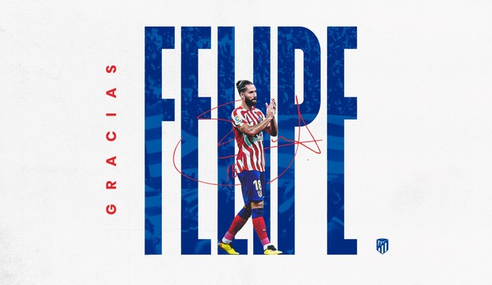
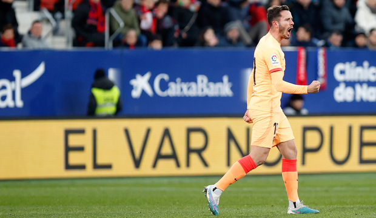
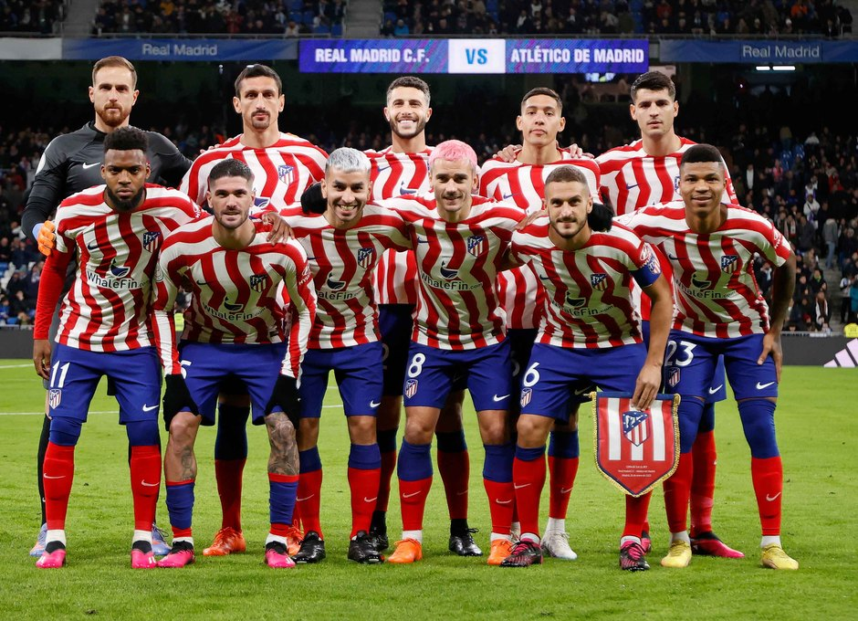
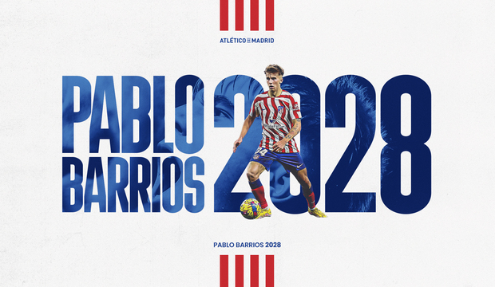

Noticias
Página NO Oficial del Atético de Madrid
Simeone superó a Luis Aragonés como el técnico que más veces nos ha dirigido a lo largo de la historia
Ambos son, con ocho y seis títulos respectivamente, los entrenadores rojiblancos más laureados.
Diego Pablo Simeone se convirtió este sábado en el técnico que en más encuentros oficiales nos ha dirigido en toda la historia (613), superando así el número de partidos en los cuales Luis Aragonés se sentó en nuestro banquillo (612).
Un nuevo hito en la trayectoria profesional del preparador argentino, quien ya en marzo de 2021 rebasó al propio Luis Aragonés en cantidad de victorias como entrenador rojiblanco. No en vano, Simeone ha saldado con triunfo el 59% de sus compromisos al frente de nuestro club, donde solo ha concedido un 18% de derrotas, por el 50 y 28% respectivo que acumuló el de Hortaleza en cada uno de esos apartados.
Leyendas ambos de nuestro banquillo, son también los técnicos atléticos más laureados, contando el argentino con ocho trofeos en su palmarés y Luis Aragonés, con seis. Éste conquistó una Copa Intercontinental, tres Copas (1976, 1985, 1992), una Liga (1977) y una Supercopa de España (1985), mientras que Simeone ha logrado hasta la fecha dos Ligas (2014, 2021), una Copa (2013), dos Europa League (2012, 2018), dos Supercopas de Europa (2012, 2018) y una Supercopa de España (2014).
En cambio, Luis Aragonés supera a Simeone en número de temporadas como entrenador rojiblanco: 15 a 12, si bien el argentino encadena todas ellas de manera consecutiva y el madrileño lo logró a lo largo de cuatro periodos distintos (1974-1980, 1982-1987, 1991-1993, 2001-2003).
Griezmann marcó su gol número 150 como rojiblanco
El ariete francés ha visto puerta en el 45,8% de sus partidos como atlético.
Con la diana que consiguió este sábado frente al Sevilla, Antoine Griezmann cosechó su tanto número 150 vistiendo nuestra camiseta.
El '8' rojiblanco, que ya en octubre de 2022 se convirtió en el tercer máximo realizador de la historia atlética -en lo que a competiciones nacionales e internacionales se refiere-, sigue así recortando distancias con las dos leyendas que le preceden en esta clasificación: Luis Aragonés -quien logró 172 goles-, y Adrián Escudero -autor de 169-.
Detrás de ellos queda un Paco Campos que marcó 156 -aunque incluyendo nueve en campeonatos regionales de la época-, siendo la referencia ofensiva del Atlético Aviación Club a finales de la década de 1930 y durante casi toda la de 1940.
Griezmann alcanzó esta cifra redonda en su partido oficial número 327 en nuestro club, lo cual arroja un porcentaje de acierto del 45,8% de los compromisos disputados. Una cifra muy próxima al 46,4% de un Luis que jugó 370 encuentros, por el 51,2% que acredita un Escudero que defendió la rojiblanca 330 veces.
El ariete francés, máximo artillero en la era Simeone, se estrenó como goleador con nuestro Atleti el 16 de septiembre de 2014, en un duelo europeo contra Olympiacos, y ha puesto su rúbrica a inolvidables tantos como el primero en la historia del Cívitas Metropolitano -ante el Málaga-, el póker conseguido frente al Leganés en febrero de 2018 o el doblete anotado contra el Olympique de Marsella en la final de la Europa League de ese mismo año.

¡Bienvenido, Matt Doherty!
Sobrio y seguro lateral diestro de 31 años de edad, acredita una dilatada experiencia en el fútbol de Reino Unido.

Acuerdo con el Nottingham Forest para el traspaso de Felipe
El defensa brasileño emprende una nueva etapa profesional incorporándose al equipo inglés.

Saúl firma la victoria en Pamplona
El jugador ilicitano desniveló el partido mediada la segunda parte, batiendo por bajo a Aitor Fernández tras una gran asistencia de De Paul.

Derrota en la prórroga en el Bernabéu
El Atlético dio la cara, fue mejor durante gran parte del encuentro pero el gol de Rodrygo en el 79 llevó la eliminatoria a la prórroga.
En el tiempo extra, expulsión de Savic por doble amarilla y goles de Benzema y Vinicius para decidir semifinalista.
El domingo, próximo compromiso liguero en Pamplona ante Osasuna.

Pablo Barrios renueva hasta 2028
El joven centrocampista rojiblanco, formado en la Academia desde 2018 se convierte en jugador de la primera plantilla.

Marcos Llorente sufre una lesión muscular en los aductores
Nuestro jugador se ha sometido a pruebas médicas que han confirmado la lesión de bajo grado que sufrió en el encuentro ante el Real Valladolid.